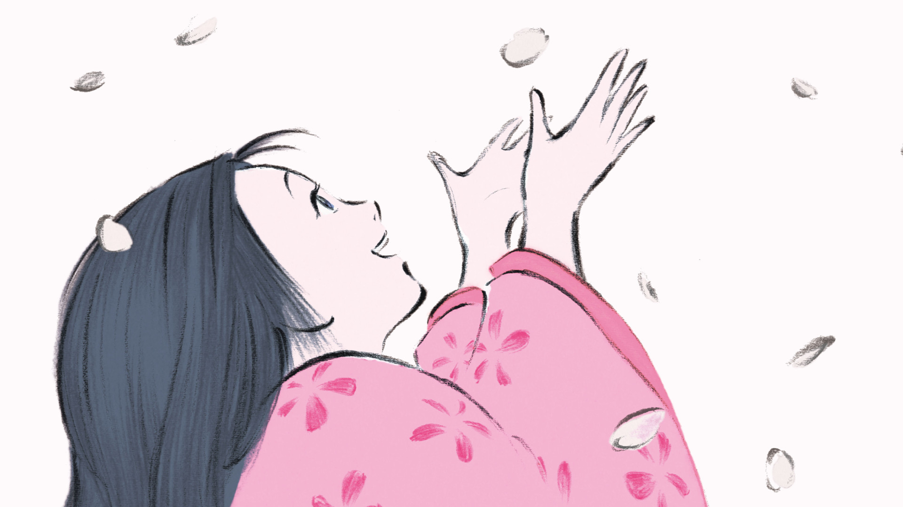

Home
La Storia della Principessa Splendente
Next

Un giorno di primavera un anziano tagliatore di bambù trova all'interno di un fusto di bambù una minuscola creatura luminosa dalle sembianze di una principessa. Quando l'uomo la mostra alla moglie, la creaturina si trasforma improvvisamente in una neonata e, siccome i due anziani coniugi non hanno figli, decidono di tenerla con loro dandole il nome di Principessa. La strana bambina cresce molto rapidamente tanto da essere soprannominata dai ragazzi del villaggio "Gemma di bambù" per questa sua capacità di maturare repentinamente: in poche settimane riesce a camminare, a parlare e comincia ad aiutare l'anziano genitore nel suo lavoro. Principessa si integra perfettamente nella vita dei campi e del villaggio imparandone i ritmi e cominciando ad amarli. Prosegue inoltre nella sua crescita prodigiosa, come se ogni nuova esperienza sviluppasse sia la sua mente che il suo corpo e nel corso dell'estate arriva ad assumere le sembianze di una ragazzina di una decina d'anni. Ha come senpai "fratellone" Sutemaru, un adolescente del villaggio che le fa da guida nella sua veloce infanzia. Il tagliatore di bambù comprende fin dall'inizio che la sua Principessa ha origini soprannaturali e si prende cura di lei al meglio delle sue possibilità, ma quando ritrova in altre canne di bambù delle pepite d'oro e dei meravigliosi vestiti, capisce che il Cielo vuole che il destino di sua figlia non sia tra i contadini del villaggio ma tra gli sfarzi della capitale. Decide quindi di acquistare con l'oro una sontuosa residenza in città e comincia a preparare per Principessa quello che lui ritiene un futuro di felicità. Con l'autunno Principessa, che ha ormai assunto le sembianze di un'adolescente, deve lasciare con tanto rimpianto la sua vecchia casa, il villaggio e tutti i suoi amici per recarsi con i genitori nella sua nuova residenza nella capitale. Le viene imposto il nuovo nome di "Principessa Splendente" e, circondata da servitori ed ancelle, è costretta ad imparare tutti i comportamenti aggraziati che una giovane nobile deve mantenere in società. La sua fama di fanciulla leggiadra oltre ogni dire si diffonde rapidamente, tanto da suscitare l'interesse di importanti dignitari di corte e perfino dell'imperatore, che chiedono la sua mano ricevendo però un suo fermo rifiuto. Principessa si sente però sempre più fuori posto in quella vita artificiosa dell'alta società e quando finalmente si rende conto della natura soprannaturale delle sue origini e che presto dovrà ritornare sulla Luna, luogo da dove proviene, comprende che forse avrebbe trovato la felicità terrena se fosse rimasta al villaggio a fianco del suo "fratellone" Sutemaru, che solo ora capisce quanto fosse importante per lei. Ormai però è troppo tardi e una notte arriva la corte celeste dalla Luna per riportare Principessa al suo luogo d'origine. I due anziani piangono disperati per la sua partenza, consapevoli di avere frainteso tutto e di essere i responsabili della sua sofferenza, chiedendole infine perdono per ciò che hanno fatto. Prima di partire passerà da Sutemaru, che si è sposato ed è diventato padre, anche se il suo cuore appartiene ancora a lei. Appena la vede, i due si allontanano insieme volando spensierati e ripensando ai giorni felici insieme, dimenticando per un attimo tutto il resto, ma il tempo di partire non tarda. Secondo quanto dice il popolo della Luna, lei non ricorderà più nulla della sua esperienza sulla Terra, anche se la sua vita futura sarà probabilmente segnata da una inspiegabile vena di nostalgia. Mentre il carro celeste si allontana dal pianeta, la principessa volta il capo e guarda il mondo umano con aria triste.